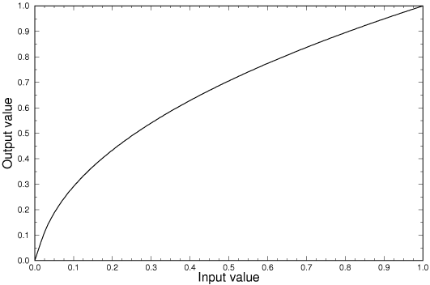

When expressing a colour in RGB, what we are trying to specify is the amount of light which will be emitted from each phosphor, as a fraction of full power. What we are actually specifying is however the voltage which will be applied to each electron gun.
The two are not linearly related, because the amount of light emitted is proportional to the beam power rather than the voltage. The beam power is the product of voltage and current, and current turns out to be roughly proportional to the grid voltage to the power 1.5. Thus, the light emitted is proportional to the voltage to the power 2.5 or so. The actual value of the exponent, called gamma, varies somewhat and the power law is only an an approximate model of the real situation, albeit a good one. An additional optical effect caused by viewing images against a dim surround is that the effective gamma value is somewhat reduced, from a theoretical 2.5 to around 2.2
To deal with this non-linearity, the inverse power function (1/2.2) is applied to the RGB data before display, compensating for the non-linearities which will be introduced. Figure 5 shows a typical correction curve, which is a mirror image about the line Input = Output of the display non-linearity. (In other words, the display non-linearity curves down from a straight line and so the gamma correction curves up from that line [8].

Fig 5: A typical gamma correction curve.
There are a number of places at which this correction could be applied, and this affects how Web user agents handle image data.
The end result of all these potential corrections, plus the display non-linearity, must equal a linear transformation for accurate tonal reproduction to be obtained. The Web user agent must therefore be aware of the amount of correction from step one (in the image file received from the server) and from steps two and three (provided by the underlying platform) so that the appropriate correction can be made.
With most image formats there is no way to determine if any correction has been applied at step one, and if so, what value was used. This results in considerable uncertainty among information providers as to how to proceed. The following quote is typical:
We have no real stats on what people on the nets have and what looks best. Most Mac's wash out the colors while Windows 3.1 make everything look dark. We need to know what is the best approach to providing free graphics. Please let us know what you want!
What is needed is for the image file to contain machine-readable details of the correction that has been applied. This facility has been part of the Utah RLE format [9] for several years. TIFF files [5] can contain very precise transfer curves although most in practice do not. PNG [6]also has the facility to record any gamma correction that has been applied. Kodak PhotoCD [10] uses a single standard transfer function. Clearly, such formats make the user agent implementor's job much easier.
If an image is under or over gamma corrected, this also affects the colour balance. Over correction (in addition to making mid-tones too light) shifts colours towards neutral grey, while under correction (in addition to making mid-tones too dark) shifts colours towards the display primaries.
Viewing on screen and printing on paper are two process with very different transfer characteristics, so what is right for one is not right for the other. The extent of the mismatch depends on how much of the required correction has already been done to the image, how much is done in the viewing software, and how much (if any) is done by the software or hardware of the underlying platform.
User agents should provide some sort of gamma correction which does the right thing in as many cases as possible. This might be done by, in order of importance:
User agents which offer printing should be aware of the different gamma requirements for screen and print and might offer similar facilities (allowing customisation, printing a test chart) to adjust gamma for printing.